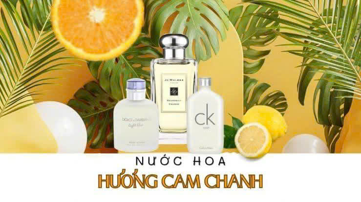
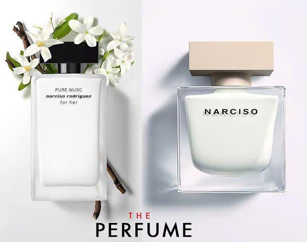
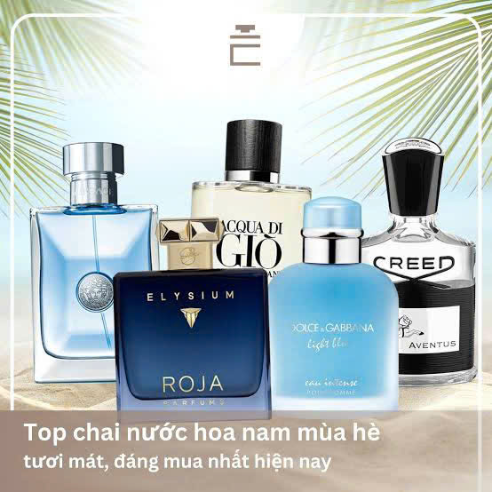

Mùa hè cần một mùi hương mang lại cảm giác dễ chịu.
Mùa hè luôn là thời điểm khiến nhiều người cân nhắc kỹ hơn khi lựa chọn nước hoa. Nhiệt độ cao và thời tiết nóng ẩm khiến hương thơm khuếch tán mạnh hơn, vì vậy những mùi hương quá ngọt hoặc quá nồng đôi khi lại trở nên kém phù hợp.
Thay vào đó, các tầng hương thanh mát, nhẹ nhàng và sạch sẽ đang trở thành lựa chọn được nhiều người yêu thích. Một mùi hương phù hợp không chỉ giúp bạn luôn tự tin suốt cả ngày mà còn mang đến cảm giác tươi mới, dễ chịu trong mọi hoạt động, từ đi học, đi làm đến những chuyến du lịch mùa hè.
Đó cũng là xu hướng mà Genderbomb – nước hoa độc bản từ cảm xúc theo đuổi: tạo nên những mùi hương không chỉ dễ sử dụng trong khí hậu nhiệt đới mà còn giúp mỗi người thể hiện cá tính và cảm xúc theo cách riêng.
Vì sao nên chọn nước hoa có tầng hương thanh mát?
Mang lại cảm giác sảng khoái suốt ngày dài
Những nhóm hương tươi mát thường tạo cảm giác sạch sẽ, dễ chịu ngay từ lần xịt đầu tiên. Chúng không quá nồng mà lan tỏa vừa phải, giúp người dùng luôn cảm thấy thoải mái ngay cả khi thời tiết oi bức.
Chính vì vậy, các nhóm hương Citrus, Aquatic hay Green Notes luôn nằm trong danh sách được yêu thích mỗi khi mùa hè đến.
Phù hợp với nhiều hoàn cảnh sử dụng
Điểm đặc biệt của những mùi hương thanh mát là sự linh hoạt.
Bạn có thể sử dụng khi đi học, đi làm, gặp gỡ bạn bè, tham gia các hoạt động ngoài trời hay du lịch mà vẫn tạo được cảm giác tinh tế, lịch sự và dễ chịu với những người xung quanh.
Đây cũng là phong cách hương thơm được nhiều người trẻ lựa chọn cho thói quen sử dụng nước hoa hằng ngày.

Các nhóm hương citrus và aquatic luôn được yêu thích trong mùa hè.
Những tầng hương nước hoa thanh mát được yêu thích nhất
Hương đầu – Cảm giác tươi mới ngay từ lần chạm đầu tiên
Hương đầu là tầng hương xuất hiện ngay sau khi xịt và thường lưu lại trong khoảng 15–30 phút đầu tiên.
Những nốt hương được yêu thích trong mùa hè gồm:
- Cam Bergamot
- Chanh vàng
- Chanh xanh
- Quýt
- Bưởi
- Lá bạc hà
- Lá hương thảo
- Tiêu hồng
Những thành phần này mang đến cảm giác mát lạnh, sảng khoái và tràn đầy năng lượng.
Hương giữa – Dịu dàng và cân bằng
Khi hương đầu dịu xuống, tầng hương giữa bắt đầu bộc lộ rõ nét và cũng là phần thể hiện phong cách chính của chai nước hoa.
Những nốt hương phù hợp với mùa hè thường là:
- Hoa cam
- Hoa nhài
- Hoa sen
- Hoa linh lan
- Trà xanh
- Lá violet
- Oải hương
- Hoa mẫu đơn

Các tầng hương hoa nhẹ mang đến cảm giác thanh lịch và tinh tế.
Các hương hoa nhẹ kết hợp cùng trà xanh mang đến cảm giác thanh lịch, tự nhiên nhưng vẫn giữ được sự tươi mới suốt cả ngày.
Hương cuối – Nhẹ nhàng nhưng lưu hương tốt
Hương cuối quyết định chiều sâu và độ lưu hương của nước hoa.
Đối với mùa hè, những thành phần được yêu thích gồm:
- Xạ hương trắng
- Gỗ tuyết tùng
- Gỗ đàn hương
- Cỏ hương bài (Vetiver)
- Hổ phách nhẹ
- Rêu sồi
Những nốt hương này giúp tổng thể mùi hương trở nên mềm mại, sạch sẽ và bền mùi hơn mà vẫn giữ được sự thanh thoát.
Những nhóm hương phù hợp nhất cho mùa hè
Citrus – Tươi mát và tràn đầy năng lượng
Các nốt cam, chanh, bưởi và quýt mang đến cảm giác sảng khoái ngay từ lần xịt đầu tiên, rất phù hợp với những người yêu thích phong cách năng động và trẻ trung.
Aquatic – Hơi thở của biển cả
Aquatic là nhóm hương gợi nhớ đến đại dương, làn gió biển và không khí trong lành. Đây là lựa chọn lý tưởng cho cả nam và nữ.
Green Notes – Tươi mới từ thiên nhiên
Những nốt hương lá xanh, cỏ non, trà xanh hay thảo mộc mang lại cảm giác gần gũi với thiên nhiên.
Floral Fresh – Hoa cỏ nhẹ nhàng
Các loài hoa như hoa sen, hoa nhài, linh lan hay mẫu đơn tạo nên cảm giác thanh thoát, nữ tính nhưng vẫn rất dễ chịu trong mùa hè.

Hương thơm phù hợp sẽ khiến mùa hè trở nên dễ chịu và đầy cảm hứng hơn.
Bí quyết giúp nước hoa phát huy tốt nhất vào mùa hè
- Xịt lên cổ tay, sau tai hoặc hai bên cổ để hương thơm lan tỏa tự nhiên.
- Dưỡng ẩm cho da trước khi sử dụng để tăng độ bám hương.
- Chỉ nên xịt từ 2–4 lần để tạo cảm giác dễ chịu.
- Không chà xát cổ tay sau khi xịt để tránh làm thay đổi cấu trúc mùi hương.
Lựa chọn đúng mùi hương không chỉ giúp cơ thể thơm mát mà còn góp phần tạo nên phong cách riêng, để mỗi ngày mùa hè đều trở nên tràn đầy năng lượng và cảm hứng.